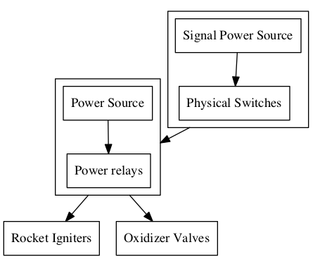

Problem: The rocket's not going anywhere without ignition! Well, hopefully. We also have an issue with our hybrid motor which works as it should meaning it needs to be filled with an oxidizer before it can fly. And trust me, you don't want to be nearby when it is being filled.
So how do we build a system that lets us fill and ignite a rocket from a 100m (300 feet) away?
Work done so far: So far we've built a completely custom system
of relay
switch circuits with signals delivered over a 400 feet (130m) wires and
four levels of safety; common sense, key switch, general safety switch,
ignition safety switch. The system also allows us to toggle solenoid valves to
control the flow of the oxidizer from ground tanks to the rocket's oxidizer
tank. Here's the simplified functional graph of the current system:

Things to improve:
| Debugging | Currently we have to check every point in the launch box circuitry by hand. It sure would be nice to have a computer do that for us! |
| Lack of digitalization | Do we really want to run wires till the end of our existence. Wouldn't it be nicer to have some sort of a electronic brain receive our intentions by air. |
| Strict safety algorithm/analysis | We're not trying to do our work badly, we hope no one does, buy sometimes we're tired and forget about a tiny little thing... Explosions are nice, but if intended. |
| Hand-soldered | Our launch system is hand-soldered and we couldn't be prouder of it, except when we want to be rational, cause there really is no hiding that we would like to have it printed. |
| We built it up from the ground | Every component in there is chosen, assembled and made working by us. Wouldn't it be more efficient to use commercial sub-circuits? |
Things we're proud of (and would like them to stay):
| Modularity | Our system is modular. Something breaks, we throw it out and have a spare installed within 5 min. Big boards are good, but not when you have to repair them. |
| Simplicity | We wanted to use the simplest design possible. Someone once said that debugging is twice as hard as designing so if you designed it cleverly you're not clever enough to debug it. |